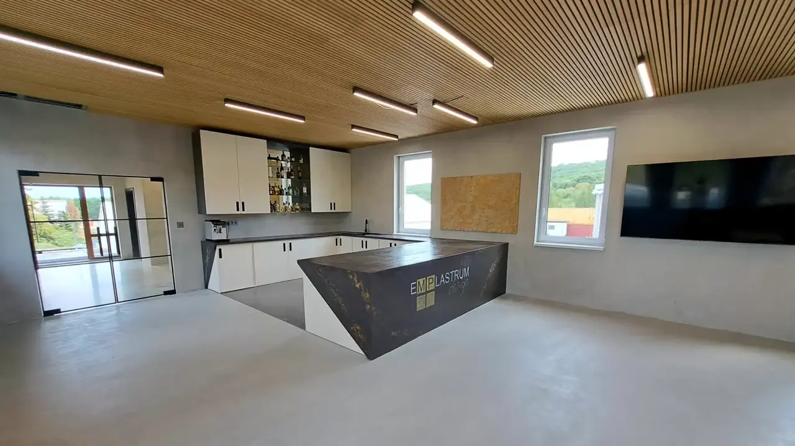

Vzorky, odstíny a struktury, které na fotografii nepoznáte. Showroom je v Želešicích u Brna a navštívit ho můžete po telefonické domluvě.

Projděte si showroom v Želešicích u Brna z pohodlí domova a rozhlédněte se po vzorcích stěrek i litých podlah.
Struktura a odstín se mění se světlem. Naživo je to znát.
Barvy, struktury a vzhled povrchů si dáte vedle sebe.
Řešení volíme podle designu, zatížení a praktického využití.
Showroom je otevřený po telefonické domluvě, od pondělí do pátku.
Zavolejte na +420 602 596 664 nebo nám napište přes formulář.
Pošlete fotografie, plánek nebo popis prostoru. Usnadní to výběr vzorků.
Prohlédneme vzorky, odstíny a struktury a probereme prostor, jeho zatížení a vzhled, který hledáte.
Podle potřeby navrhneme další kroky, například posouzení vašeho prostoru nebo realizaci.
Navigovat: Mapy.com · Google Maps · OpenStreetMap
V showroomu pořádáme praktické workshopy aplikace betonových stěrek, v malé skupině a s individuálním přístupem.